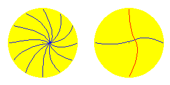
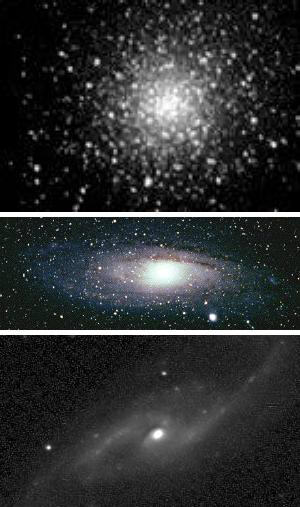
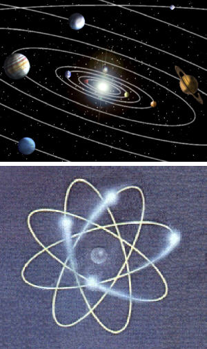

| Alfred Evert | 12.05.2004 |
03.10. Potentialwirbelwolken
Vielfältiges Schwingen

In dieser Animation ist ein Querschnitt durch die äquatoriale Ebene dargestellt. Außen herum ist ´ruhender´ Äther, während nach innen hin die Bewegungsintensität größer ist, d.h. die Schwingungen weitläufiger sind. Dieses Bild verdeutlicht nochmals, dass zwischen Bewegungskern und Grenzbereich ein großer Bereich ausgleichender Bewegungen gegeben sein muss.
In diesem Bild rechts ist ein Querschnitt durch die Längsachse dieser Potentialwirbelwolke dargestellt. Um diese Achse sind die Bewegungen ´taumelnd´, während in der äquatorialen Ebene die Verbindungslinien schlingernd sind. Diese Schwingungen sind höchst differenziert, die gesamte Wolke also keinesfalls punktsymmetrisch. Diese Bewegungen ergeben sich aus vielfach überlagerten Kreisbewegungen, wobei von außen nach innen immer größere Radien auftreten werden. Keine dieser Bewegungen kann nur auf einer Fläche statt finden, sondern muss immer in drei Dimensionen zugleich laufen. Die Verbindungslinien sind also nicht nur solch einfache Kurven wie hier dargestellt, sondern bilden vielfältige ´Schlingen bzw. Augen´.
Innerhalb dieses grob skizzierten bzw. hier visualisierten Bewegungsprinzips wird es viel Variationen geben bis hin zu individuellen Bewegungsmustern. In vorigen Kapiteln wurde diese Prinzipien als theoretische Notwendigkeit heraus gearbeitet, welche in einem lückenlosen Äther absolut zwingend sind. Die Konzeption der Potentialwirbelwolke wurde dabei als ortsfest im Raum betrachtet, zunächst also nur als theoretisches Modell. Nun ergibt sich die Frage, welcher Art reale Potentialwirbelwolken im Universum existieren.
Alle Erscheinungen 
Die größten Exemplare dieser Wolken gibt es milliardenfach am Himmel zu sehen, in Form der Galaxien. Die reale Ätherbewegungen sehen wir nicht, nur die Ansammlung von Sternen in ihren weiten Ausgleichsbereichen.
Diese Bilder zeigen verschieden Formen von Galaxien. Oben ist eine kugelförmige Ansammlung von Sternen zu sehen, d.h. in dieser Wolke sind die Verbindungslinien ziemlich gleichartig bzw. alle Bewegungen sehr ähnlich. Das mittlere Bild zeigt eine Galaxis mit schönen Spiralarmen, aus der man die Drehung augenscheinlich erkennen kann - nur gibt es real keine Um-Drehung im Äther, sondern nur Schwingen. Viele Galaxien haben wenige Arme, das untere Bild zeigt beispielsweise eine Galaxis mit nur zwei Armen, die zudem stark abgeknickt sind.
In der Astronomie wird angenommen, dass die unterschiedlichen Formen von Galaxien diverse Entwicklungsstadien darstellen. Gewiss wandern die Galaxien durch den Raum und unterliegen dabei auch diversen Einflüssen, bis hin zur Kollision zwischen Galaxien. Wie im vorigen Kapitel angeführt wurde, entwickeln sich dabei im Universum immer differenziertere Formen und Strukturen - ganz im Gegensatz zum Entropiesatz und dem prognostizierten Wärmetod des Alls.
Null Anziehungskräfte
Aus Sicht lückenlosen Äthers stellen sich die Vorgänge vollkommen anders dar. Es gibt keine Anziehungskraft, der Äther ist ein unteilbares Ganzes, es muss nichts zusammen gehalten werden, dieser Stoff als solcher kann überhaupt nicht auseinander driften. Es ist im Zentrum kein anderer Äther als überall mit überall gleicher Dichte. Im Zentrum schwingt der Äther nur in größeren Distanzen als außen herum.
Wie im vorigen Kapitel beschrieben, übt die gesamte Masse Freien Äthers rund um eine Galaxis einen gewissen Druck aus, indem er sich gegensinnigen Bewegungsphasen widersetzt und damit ein intensiveres Schwingen der Verbindungslinien bewirkt, was zu vorigen Überlagerungen, Schlingen und Augen des Schwingens führt. In diese Bereiche hinein werden auch Stern (kleinere Potentialwirbelwolken, siehe unten) ´gespült´, durch sie erst werden die (bislang nur theoretisch beschriebenen) ´Verbindungslinien´ sichtbar.
Es gibt also keine Gravitation in Form von Anziehungskraft (und auch keine andere starke und schwache Anziehungs-Kräfte). Wohl aber gibt es eine Tendenz zur Zusammenballung, basierend aus der Differenz von kleinräumiger und gestreckter Bewegung sowie den damit phasenweise gegebenen gegenläufigen Bewegungen. In der Galaxien-Wolke wirkt sein Potentialwirbel mit gleichem Ergebnis wie der bekannte Tee-Tassen-Effekt (wo beim Umrühren sich das Grobe mittig versammelt). Wohlgemerkt: das Ergebnis ist vergleichbar, nicht jedoch die Prozesse zwischen materiellen ´Teilchen´ (dem rotierenden Potentialwirbel in der Teetasse) und im Äther selbst (dem in drei Dimensionen schwingenden Potentialwirbel Gebundenen Äthers).
Gerade bei Kollisionen zweier Galaxien scheint Anziehung erkennbar zu sein, wenn Sterne und Staub von der einen Galaxis in die andere über eine spiralige Bahn ´hinüber gezogen´ wird. Die wirkliche Ursache basiert auf den Prinzipien Lokaler Ätherbewegungen: die aufnehmende Galaxis ist nicht mehr nur von Freiem Äther umgeben, die abgebende Galaxis stellt mit ihren (zumindest phasenweise) gegensinnigen Bewegungen größeren Widerstand dar. Im Äther dazwischen entsteht ´Stress´, der sich nur durch intensivere Verwirbelung der Verbindungslinien auflösen kann. Mit diesen zusätzlichen Wirbeln schwimmen bzw. werden Sterne und andere materielle Teil hinüber gespült zur dominanten Galaxis.
Sterne und Masse
Die Wolke einer Sonne stellt ein kleines Wirbelsysteme dar im vergleichsweise riesigen Wirbelsystem ihrer Galaxis. Diese Sterne werden einfach in den Wirbeln der Ausgleichsbereiche mit umher gewirbelt. Aufgrund des zuvor beschriebenen Drucks der jeweils ´ruhigeren´ Zonen (bzw. der Bereiche mit größerem Widerstand aufgrund gegensinniger Bewegungen) werden die Sterne vorwiegend in die ´turbulenten´ Zonen der Spiralarme hinein gewirbelt - wobei Masse und Gravitation in herkömmlichem Sinne keinerlei Rolle spielen.
In den Wirbelzentren treffen nun Verbindungslinien aus allen Richtungen zusammen. Schon bei den theoretischen Überlegungen der vorigen Kapitel wurde festgestellt, dass die Bewegungsmuster keinesfalls uniform sind. Aufgrund äußerer Einflüsse werden die Bewegungen der diversen Verbindungslinien noch differenzierter, aber z.B. auch aufgrund der eingebetteten Sterne in den Spiralarmen werden Verbindungslinien individuelle Struktur aufweisen. In den Zentren treffen alle Verbindungslinien zusammen, somit gibt es dort den größten ´Stress´. Einerseits werden dorthin die Sterne geschoben (wie oben ausgeführt), andererseits geht es dort drin ´heiß´ her.
Das gilt für die Zentren von Galaxien, aber genauso für die Zentren der Sonnensysteme selbst: die Sonne ´glüht´, zum Abbau von ´Stress´ müssen Wirbel ´hinaus-geschleudert´ werden. Dieser Vorgang ist vergleichbar zu Erdbeben, durch die aufgestaute Spannungen abgebaut werden. Äther ist nicht elastisch, jede ´Spannung´ muss sofort durch ausgleichende Bewegungen kompensiert werden. Gewöhnlich nennt man das ´Strahlung´, die diverser Art sein kann, im Prinzip jedoch sich wiederum wie Potentialwirbelwolken verhält, allerdings nicht als ´ortsfester´ Wirbel, sondern im Raum ruckartig vorwärts springend (siehe nächstes Kapitel).
Planeten und umlaufende Wellen 
In vorigen Kapiteln wurde dargestellt, dass die Ausgleichsbewegungen in Richtung der Pole relativ einfache Kegelform haben. Das Taumeln um diese Achse ist eigentlich nur zum Ausgleich der ´schiefen´ Äquator-Ebene erforderlich. Viel komplexer sind die Ausgleichsbewegung in horizontaler Ebene, weil dort die größeren Differenzen des mittigen Schwingens hin zum Freien Äther auszugleichen sind. Darum bilden sich in dieser Ebene vermehrt obige Schlingen und Augen.
Wie im Kapitel ´Umlaufende Welle´ dargelegt, ergeben phasenversetzte Kreisbewegungen die Erscheinung umlaufender Wellen. Damit wandern auch solche Augen um die Sonne herum - und in einigen dieser überlagernden Wirbel schwimmen Planeten mit um die Sonne. Wie im vorigen Kapitel ´Bewegungs-Antrieb´ dargelegt, sind diese überlagerte Kreisbewegungen außen sehr klein und werden nach innen größer. Entsprechend laufen diese scheinbaren Wellen (sichtbar durch eingebettete Planeten) außen langsam und innen schneller um die Sonne.
Auch ein Planet kann eine Potentialwirbelwolken sein mit entsprechenden Ausgleichsbereichen, aber nur wenn der Kern gasförmig ist. Planeten aus festem Material dagegen verhalten sich wie starre Wirbel, die keine so ausgeprägten Ausgleichsbereiche haben. Dennoch endet z.B. unsere Erde nicht an der Erdoberfläche, auch nicht an ihrer äußersten Atmosphäre, sondern erst außerhalb ihres ´Magnet- und Gravitations-Feldes´ (siehe nächstes Kapitel).
In jedem Fall aber bilden Planeten mit ihrer ´Aura´ einen erhöhten Widerstand im Bewegungssystem der Sonne. Die Verbindungslinien zwischen Sonne und Planeten sind darum intensiver in Bewegung als andere. Die schwingenden Bewegungen z.B. zwischen Sonne und Erde bilden eine ´Schliere´ von Wirbeln bzw. ganzen Strassen und Walzen, auf denen heftige ´Stürme´ toben.
Jeder Planet ist mit der Sonne auf analoge Weise in spezieller Verbindung, aber auch die Planeten bzw. ihre großräumigen Einflussbereiche ´begegnen´ sich in fortwährend anderer Weise. Bei ´großer Konjunktion´ ergeben sich durch deren Überlagerungen natürlich ganz gravierende Einflüsse - über unruhigen Schlaf bei Vollmond hinaus.
Diese ´Unruhe´ spielt sich in erster Linie in äquatorialer Ebene ab, entsprechend heftige Bewegungen treffen auf der Sonnenoberfläche aus dieser Richtung ein. Weniger überlagert und weniger ausladend bzw. weniger schnell sind Ausgleichsbewegungen der Verbindungslinien in axialer Richtung zur Sonne erforderlich. Darum läuft in den Polbereichen die scheinbare Welle (dort nicht durch Planeten erkennbar) langsamer um die Sonne herum - gut erkennbar an der dort langsamen Drehung der Sonnenoberfläche (ca. 35 Tage je Umdrehung) gegenüber der viel schnelleren Drehung der äquatorialen Bereiche (eine Umdrehung in nur etwa 25 Tagen). Nur aus diesen Gesichtspunkten, abgeleitet aus Äther als einzig realem Stoff und seiner einzigartigen Eigenschaft der Lückenlosigkeit, lässt sich dieses Phänomen erklären.
Baustelle Atom
Zweifelsfrei dürfte es ein elementares ´Teilchen´ geben, allgemein als Elektron bezeichnet. Dieses wird eine ziemlich einfache Potentialwirbelwolke sein, etwa wie oben beschriebenes theoretische Modell mit relativ einfachen Kurven der Verbindungslinien. Nahezu identisch wird das Wasserstoff-Atom sein (das ohnehin nicht ins Periodensystem chemischer Elemente passt) und beide ´materielle Teilchen´ sind die absolute Mehrheit aller Erscheinungen im All.
Es muss nicht mehr hervor gehoben werden, dass es keinerlei konkrete, abgegrenzte, massive Körperchen aus irgend einem speziellen Material gibt. Diese Erscheinungen sind nichts anderes und ausschließlich ein bestimmtes, lokales Bewegungsmuster von Äther innerhalb des generellen Bewegungsmusters allen Äthers außen herum.
Auch Atome haben keinen Kern aus speziellen Teilen, sondern sind durchgängig ganz normaler Äther. Atome (schwerer als Wasserstoff) sind entweder größere Potentialwirbelwolken oder Ansammlungen diverser Elektronen-Wolken. Potentialwirbelwolken haben individuellen Charakter, ´Materie´ ist nicht einfach aus absolut standardisierten Bausteinen zusammen gesetzt. Wenn Potentialwirbelwolken (wie z.B. Elektronen) sich begegnen, weisen sie an ihren Außenseiten in aller Regel viele momentan gegenläufige Bewegungen auf. Im Äther dazwischen entsteht Stress - diese Wolken zeigen ´Abstoßungskräfte´.
Nur unter bestimmten Bedingungen können diese Wolken ´gemeinsame Sache´ machen, z.B. wenn ihre Bewegungen in Achsrichtung synchrones Taumeln zustande bringen. Dann sind sie von dieser Seite gegenüber dem oben beschriebenen Druck des umgebenden Freien Äthers teilweise geschützt. Es können damit auch größere Zusammenballungen zustande kommen. Manchmal muss dabei eine Wolke sich ´ruckartig´ anpassen, dann wird ´Energie frei gesetzt´. Manchmal kommt dieses Zusammen-Rücken nur zustande, wenn Wolken mit ´hau-ruck´ zusammen gestoßen werden, d.h. diese Verbindung erfordert ´Energie´. Der Zusammenhalt dieser Moleküle ist mehr oder weniger lose, in Abhängigkeit von ihrer Geschlossenheit nach außen hin.
Die ´Masse´ eines chemischen Elements wird nicht durch seinen Atomkern bestimmt (es gibt dort keine spezielle Elementarteilchen), das ganze Gebilde hat vielmehr ein insgesamt in komplexer Schwingung befindliches Volumen an Äther: das minimal kleine Schwingungszentrum, die diversen beteiligten Elektron-Wolken, aber auch über deren Außenseite hinaus ragende gemeinsame Ausgleichsbereiche (praktisch eine ´Aura´). Bei Kollisionen treffen diese Wirbelsysteme gegen einander bzw. schon zwischen ihren äußeren Bereichen ergibt sich obige ´Abstoßung´. Die Atome weisen unterschiedlich ´sperrige´ Oberflächenstruktur auf. Der Widerstand, den sie damit auf andere Wirbelsysteme ausüben - das ist ihre ´Masse´ bzw. ´Trägheit´, mit welcher sie andere auf Abstand halten bzw. andere Bewegungsrichtung aufzwingen.
Durchlässig / undurchdringlich
Diese (Fehl-) Urteile basieren im wesentlichen darauf, dass in der gängigen Physik in aller Regel nur der ´Kern´ betrachtet wird. Man weiß zwar, dass es darum herum stets irgendwelche ´Felder´ gibt, aber man bezieht diese nicht konsequent in die Betrachtung ein bzw. betrachtet sie als ´abstrakte (Neben-) Erscheinung´, anstatt sie als total reale und absolut notwendige Bewegung des Äthers zu sehen.
Bei Strahlung bzw. elektromagnetischen Wellen wird beispielsweise nur das Schwingungszentrums als reale Erscheinung betrachtet - der extrem viel größere und unabdingbare Ausgleichsbereich darum herum wird nicht angemessen in die Überlegungen einbezogen. Bei Atomen und atomaren Verbindungen werden vorwiegend nur ´Atomgewicht´ und ´Valenz-Elektronen´ beachtet, basierend auf ´Teilchen´, nur unzureichend aber die gesamte Struktur des komplexen Wirbelsystems.
Bei der Analyse von Elementarteilchen setzt man weiterhin auf das Auffinden neuer Teilchen, anstatt diese als Bahnabschnitte des notwendigen Krümmens und Windens von Verbindungslinien zu erkennen. Man kann in diese Wirbelgebilde nicht eindringen, ohne sie zu zerstören (im Extremfall den Äther in extremsten ´Stress´ zu versetzen, z.B. bei Kernspaltung ´Löcher´ in den unteilbaren Äther zwingen zu wollen).
Kleinere Potentialwirbelwolken können relativ problemlos innerhalb großer Wirbel mitschwimmen. Das ist der vorherrschende Prozess in Galaxien und Sonnensystemen. Gleichartige Potentialwirbelwolken aber haben gleich starke Bewegungen und sind durch viele momentan gegenläufige Bewegungen gegeneinander undurchdringlich, sogar abstoßend, sofern sie sich nicht aneinander anlagern können. Das ist der dominante Prozess im Bereich ´materieller Körper´ (vom Elektron über Atom und Moleküle bis zu deren Ansammlungen).
Diese teilchenhafte, grobstoffliche Erscheinungen sind unsere konkrete Erfahrungswelt, in der wir gut zurecht kommen. Diese Erfahrungen sind aber hinderlich, auch die anderen ´Welten´ zu erkennen, die nicht aus abgegrenzten Teilen bestehen, sondern aus sich gegenseitig durchdringendem Schwingen. Wir kennen sehr wohl die Möglichkeit des Durchdringens auch bekannter physikalischer Erscheinungen, z.B. einiger Arten von Strahlung oder von ´Feldern´ allgemein.
Hologramme und Fokussierung
Die feinstofflichen Wolken müssen (wie alle anderen) im Prinzip in sich geschlossene Potentialwirbelsysteme darstellen. Sie können aber weit größeren Umfang annehmen, weil sie nur geringfügig abweichende Bewegungen gegenüber Freiem Äther aufweisen, dieser also weit geringeren Konzentrations-Druck ausüben wird. Natürlich weisen feinstoffliche Wolken auch gegenüber anderen feinstofflichen wenig Rückstoßungs-Momente auf, d.h. diese werden sich vielschichtig überlagern.
Die feinstofflichen Wolken überlagern damit praktisch allen Freien Äther. Die obigen Spiralknäuelbahnen sind im Universum omnipräsent, werden aber kaum irgendwo in ´reiner´ Form gegeben sein. Die Universelle Ätherbewegung hat Ordnungsfunktion, indem sie z.B. vorige Potentialwirbelgebilde der ´materiellen Welt´ nur in den Strukturen dauerhaft bestehen lässt, die ausreichend resonant dazu sind.
Analog dazu sind ´geistige´ Wolken aufgrund ihrer großen Ausdehnung (zumindest in weiten Bereichen) omnipräsent. Wie schon bei groben Potentialwirbelwolken dargestellt wurde, sind alle Bewegungen im weiten Ausgleichsbereich in Abhängigkeit von der Bewegung im Zentrum (wie von den Gegebenheiten an der Außengrenze). Diese ´Informationen´ sind also überall in der Wolke gespeichert, ähnlich wie in einem Hologramm (nur dass hier in jedem Bereich die Bewegungen etwas anders sind, also die Richtung auf den Kern des Bewegungssystems erkennbar ist).
Aufgrund ihrer großen Ausdehnung können Wolken ´geistiger Art´ ebenfalls ´ordnend´ wirken, auf andere ´Gedanken´ wie auf Materielles. Dieser Einfluss ist aber nicht so massiv und darum nicht zwingend. Wenn aber Wolken ´mentale Bereitschaft´ zeigen, ihre Aufmerksamkeit fokussieren, können sie nach den Prinzipien der Resonanz sich als synchron schwingende Empfänger sensibilisieren - und aus den wahrgenommenen Impulsen sogar ´den Kern der Sache´ erkennen.
Umgekehrt ist natürlich auch gegeben, dass die mentalen Schwingungen einer lokalen ´Wolke´ eingehen in die Schwingungsmuster weiträumig feinstofflicher Wolken, abhängig von der Intensität seines Verhaltens insgesamt. Diese wechselseitige Beeinflussung kann auch ziemlich ´massiv´ werden, wenn viele Gleich-Sinnige sich gegenseitig resonant verstärken.
Bogen überspannt
Ich werde zu jedem der angesprochenen Themengebiete separate Teile mit vielen Kapiteln ausarbeiten. Dazu werde ich Monate und Jahre brauchen. Gern würde ich zur Kenntnis nehmen, wenn andere in den diversen Sachgebieten vor mir präzisere Gedanken auf dieser Basis entwickeln konnten als ich mit nur lückenhaftem Fachwissen leisten kann. In jedem Fall bin ich auf Hinweise angewiesen und bedanke mich dafür im voraus.
Metaphysisch orientierte Leser werden in obigen Ausführungen vielleicht schon eher erkannt haben, dass und wie und warum die erkennbaren Zusammenhänge von ´Geist und Materie´ auf einer real-physikalischen Ebene des einen stofflichen Mediums Äther basieren - und keinesfalls nur Gefühlsduselei oder esoterisches Gestammel sind. Zur präziseren Beschreibung dieser Äther-Philosophie werde ich allerdings erst nach den Ausarbeitungen zur Äther-Physik kommen - und ich hoffe bis dahin noch einige Intuitionen erfahren zu können.
Ich habe in den letzten Abschnitte einige ´Worthülsen´ benutzt, z.B. mentale Bereitschaft, Geist, Gedanken, fokussieren, sensibilisieren, empfangen usw. Ich werde mich bemühen, zur gegebenen Zeit auch dafür die entsprechenden Potentialwirbel präziser zu definieren. Einige der physikalischen Details wie der mentalen Begriffe sind mir schon einigermaßen klar, zu anderen muss ich noch viele Gedanken ´einfallen´ lassen. Beispielsweise scheint mir der Potentialwirbel ´Wille´ ein entscheidender zu sein - und nicht leicht zu knacken.
Es ist mir vollkommen klar, dass für die meisten Leser dieses Vorhaben unglaublich überspannt ist. Darum möchte ich im folgenden Kapitel zurück kehren zu ganz realem, dennoch Unvorstellbarem bis Unglaublichem: den Größenordnungen unserer Welt. Außerdem ist zu klären, wie Potentialwirbelwolken sich durch ruhenden Äther hindurch fortbewegen können, beispielsweise das Licht. Und es sind dann auch die starren Gebilde anzusprechen, z.B. die rotierende Erde.
Im ersten Teil dieser Ausarbeitungen wurde dargestellt, warum das Universum aus diesem lückenlosen Stoff namens Äther bestehen muss. Im zweiten Teil wurde das Schwingen allen Äthers auf seinen sehr engen, aber höchst komplexen Spiralknäuelbahnen beschrieben. In vorigen Kapiteln wurde das Bewegungsprinzip lokal begrenzter Schwingungen beschrieben. In dieser Animation sind schematisch dessen prinzipielle Bewegungsabläufe veranschaulicht.
(Diese Aussage ist falsch. Jahre später entdeckte ich die vielfältigen Möglichkeiten lokaler Bewegungsmuster. Insofern sind auch die folgenden Aussagen nur bedingt richtig).
In der Astronomie wird die Häufung von Sternen in Galaxien mit Anziehungskraft der Materie-Massen begründet und im Zentrum werden darum mächtige ´Schwarze Löcher´ vermutet. Die Astronomie basiert eigentlich nur auf der (fraglichen) Gravitations-Konstanten und der Lichtgeschwindigkeit. Weil Rechnungen mit diesen Faktoren und der ´gewöhnlicher´ Materie nicht stimmig sind, bringt man ´dunkle Energie´ und viele andere (rein fiktive) Faktoren ein.
Natürlich ist auch das Bewegungsprinzip eines Sterns eine Potentialwirbelwolke. Auch eine Sonne besteht nicht aus ´besonderem´ Stoff, sondern aus dem einheitlichen Äther. Eine Sonne hat keine größere ´Masse´ als ihre Umgebung, weil Äther keinerlei Dichteunterschiede aufweist. Eine Sonne besitzt dennoch Trägheit, aber nur aufgrund ihrer Bewegung. Aller Äther der Sonne selbst, aber auch das gesamte Volumen der unabdingbaren Ausgleichsbereiche, ist in synchroner Bewegung. Die gesamte kinetische Energie dieses gesamten Sonnensystems stellt ihre Trägheit dar - oder auch ihre ´Masse´ (mit der sie bei Kollisionen gegenüber anderen Potentialwirbelwolken wirksam wird).
Das noch immer gängige Modell eines Atoms ist abgeleitet aus dem Bewegungssystem von Sonne und Planeten (siehe obige schematische Darstellung). Die logische Inkonsistenz dieser Vorstellung ist hinreichend bekannt, vermeintliche Anziehungs-, Abstoßungs-, Zentrifugal- und Zentripetalkräfte bis hin zu ´Klebstoff-Teilchen´ können diese Erscheinungen nicht befriedigend erklären. Die Quanten-Physik jagt nach Sub-Elementarteilchen, arbeitet mit rein fiktiven Begriffen und ist ´stolz´ darauf, dass sie mit ´normaler´ Anschauung nicht mehr zu verstehen sei.
Wenn man eine kleine Potentialwirbelwolken - ein Photon - in Richtung dieser Elemente schickt, kann es in die Wolke so lang eindringen bis es auf starke gegensinnige Bewegungen trifft, so dass dieser Mini-Wirbel wieder zurück gestoßen wird. Das wird rein zufällig an dieser oder jener Stelle einer momentanen Krümmung einer Verbindungslinie geschehen. Aus diesem einfachen Effekt wurde auf ´Unschärfe´ geschlossen mit ihrer unglücklichen Geschichte ausufernder, geradezu unglaublich ´un-wahrscheinlicher´ Fehl-Schlüsse (bis hin zur Annahme, das beobachtete ´Wellen-Teilchen´ beobachte den Veranstalter des Experiments, z.B. beim bekannten Doppel-Spalt-Phänomen).
Die klassische Physik verweist aber alles andere in die ´dubiosen´ Bereiche der Meta-Physik. Der dominante Prozess bei ´feinstofflichen´ Wolken ist das mühelose Durchdringen von Potentialwirbeln durch andere hindurch. Es ist klar, dass ´feinstoffliche´ Schwingungen alles andere sehr leicht überlagern können. Wenn sich dieser Art ´Geist´ und Materie begegnen, gibt es momentan natürlich andersartige Bewegungen und beide beeinflussen sich gegenseitig. Momentan gegensinnige Bewegungen sind aber nicht so ´massiv´ und gleichwertig, um die gesamte feinstoffliche Wolke schon an der Grenzfläche der grobstofflichen Wolke zurück zu stoßen.
Mir ist klar, dass ich mit diesem ´Rundumschlag´ viele Leser verprellt habe, besonders die naturwissenschaftlich orientierten (sofern sie überhaupt bis hier her sich durch ´gequält´ haben). Zweifellos aber gibt es viele Phänomene, die mit gängiger Physik nicht erklärbar sind, von denen ich oben nur einige kurz ansprechen konnte. Es bleibt jedem Leser überlassen, in seinem Sachgebiet diesen Ansatz eines lückenlosen Äthers mit seinen daraus zwingend sich ergebenden Bewegungsmöglichkeiten und - Notwendigkeiten zu prüfen.
03.11. Wandernde Potentialwirbel
Äther-Physik und -Philosophie